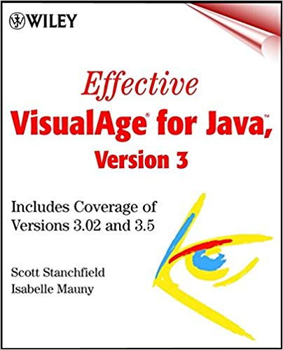
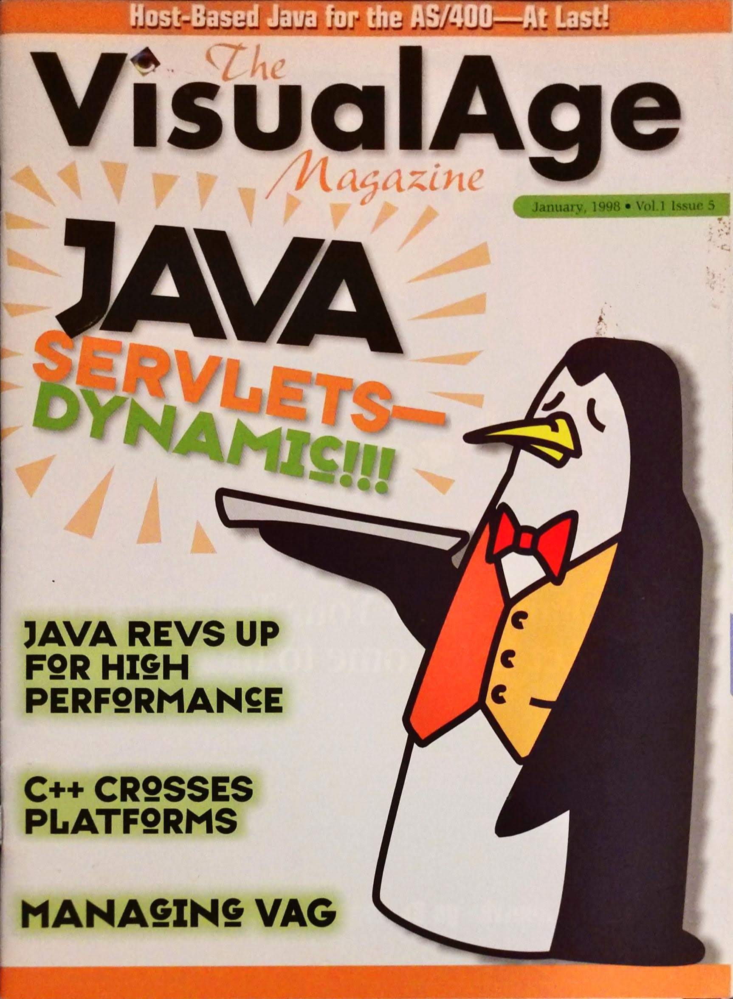

A list of my published works, a book, articles, presentations, courses, open-source software.
Book

(File this in the "never again" category... Well... Probably never again.)
- Stanchfield, S. and Mauny, I. (2001). Effective VisualAge for Java, version 3. 1st ed. New York: John Wiley. https://www.amazon.com/Effective-VisualAge-Java-Version-Coverage/dp/0471317306
Print Article

- Stanchfield, Scott A. "A Tune-Up for VisualAge for Java." The VisualAge Magazine, Jan. 1998, pp. 6-9
Online Articles
From Java to Kotlin - Episode 1 (2019)
http://javadude.com/posts/20190203-kotlin01Eclipse Tips (2000)
(was hosted at javadude.com - obsolete - removed)MVC in VisualAge for Java (2000)
(was hosted at javadude.com - obsolete - removed)Advanced MVC in VisualAge for Java (2000)
(was hosted at javadude.com - obsolete - removed)AWT Fundamentals (2000)
(was hosted at java.sun.com; no longer available)Parsers, Part IV: A Java Cross Reference Tool (1999)
http://svn.apache.org/repos/asf/maven/sandbox/trunk/jxr/maven-jxr/maven-jxr-java/src/site/resources/SeriesPt4.pdfEffective Layout Management (1999)
http://javadude.com/articles/layoutsANTLR Documentation (contributor) (1998)
http://www.antlr2.orgLayering Applications (1996)
http://javadude.com/articles/layering.htmlImport on Demand is Evil! (1996)
http://javadude.com/articles/importondemandisevil.htmlJava is Pass-by-Value, Dammit! (1996)
http://javadude.com/articles/passbyvalue.htmUsing JavaBean Accessors (1996)
http://javadude.com/articles/accessors.htmlJava Using the Right Comment (1996)
http://javadude.com/articles/comments.htmlConverting a Grammar from LALR to LL (1996)
http://javadude.com/articles/lalrtoll.htmlWhy VisualAge for Java (1996)
(was hosted at javadude.com - obsolete - removed)ANTLR Tutorial (1996)
http://javadude.com/articles/antlrtut/index.htmlPCCTS Tutorial (1996)
(was hosted at javadude.com - obsolete - removed)JavaBean Property Editors (1996)
http://javadude.com/articles/propedit/index.htmlVisualAge for Java Tips and Tricks (1996)
(was hosted at javadude.com - obsolete - removed)
Conference Presentations
No Fluff Just Stuff (http://www.nofluffjuststuff.com)
- Introduction to Eclipse (NFJS 2004)
- Eclipse Tips and Tricks (NFJS 2004)
- Adapter and Decorator: Tweaking Objects for Fun and Profit (NFJS 2003)
- Effective Interfaces (NFJS 2003)
- Patterns for Exception Handling (NFJS 2003)
JavaOne (http://javadude.com/articles/javaone)
- Creating Custom JSP Tags (2002)
- Effective Layout Management (2001)
- Hosted VisualAge for Java BoF Session (2001)
- MVC for You and Me (2000)
- Actions: Experience and Speculation (2000)
- Fun with Layout Managers (2000)
Courseware
The Johns Hopkins University (http://www.jhu.edu)
- Android Mobile Development (2012-present)
- Domain-Specific Languages (2018-present)
- Design Patterns (2002-2014)
- Web Development (2002)
- Distributed Development on the WWW (2002)
- XML Technologies (2002)
Montgomery College, MD (http://www.montgomerycollege.edu)
- Java for Non-Programmers (2001-2002)
- Java for Non-Programmers (2001-2002)
Tier Technology Training
- Servlets and Java Server Pages (2000-2001)
- Enterprise JavaBeans (2000-2001)
DPT Consulting
- VisualAge for Java (2000)
- Advanced VisualAge for Java (2000)
- Servlets and Java Server Pages (2000)
- Enterprise JavaBeans (2000)
MageLang Institute/jGuru.com (http://jguru.com)
- AWT (1998-2000)
- Swing (1998-2000)
- VisualAge for Java (1998-2000)
- Advanced VisualAge for Java (1998-2000)
- Servlets and Java Server Pages (1998-2000)
Java Users Group Presentations
Johns Hopkins University
- Android Mobile Development Bootcamp (2018)
- Kotlin Programming (2018 - 8-weeks)
- Tech Talk: DSLs and Code Generation (2017)
- Design Patterns Brown Bag Series (2015 - 7 weeks)
- Android Intents and Fragments (2014)
Java Users Groups (APL / Columbia MD / Montgomery County MD)
- Java 8 - Lambdas and Streams (2014)
- Code Generation With xText and xTend (2013)
- Template Method and Strategy (2011)
- Java Dynamic Proxies (2010)
- Effective Eclipse (2010)
- Java Enumerations (2009)
- Java Annotations: Meta-data and Code Generation (2009)
- Eclipse Plug-ins 101 (2009)
Northern Virginia Java Users Group
- Java Annotations: Meta-data and Code Generation (2009)
- ANTXR: XML Parsing Using ANTLR (2005)
- ANTLR: Parsing for Fun and Profit (2004)
Open Source Software
Android State-Machine-Based Fragment Framework
(Pending release)Android Easy Permissions Framework
(Pending release)Android Room Two-Way Databinding
(Pending release)MapBox Offline Vector MBTiles Support
(Pending release)Bean Annotations (2008)
(Was on googlecode.com - currently not hosted)Eclipse Derived Warning Cleaner (2008)
(Was on googlecode.com - currently not hosted)Eclipse Dynamic Working Sets (2008)
(Was on googlecode.com - currently not hosted)Eclipse Visible Method Reporter (2008)
(Was on googlecode.com - currently not hosted)Eclipse Dependency Visualizer (2006)
(Was on googlecode.com - currently not hosted)ANTXR (XML Parser Generator) (2004)
(Was on googlecode.com - currently not hosted)ANTLR Eclipse Plugin (2000)
(No longer supported)Eclipse Jindent Integration (1998)
(No longer supported)ANTLR 2.x (contributor) (1998-2000)
http://antlr2.orgParseView ANTLR Debugger (1998)
http://javadude.com/tools/parseviewSplitterLayout (1998)
http://javadude.com/tools/tabsplitter/splitterlayout.htmlSwing BorderEditor (1998)
http://javadude.com/tools/bordereditSwing BoxBeans (1998)
http://javadude.com/tools/boxbeansSWT Layouts (1998)
(No longer supported)TabSplitter Bean (1998)
http://javadude.com/tools/tabsplitterVisualAge AutoGut (1998)
http://javadude.com/tools/autogutVisualAge Importifier (1998)
http://javadude.com/tools/importifier